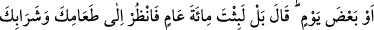

DİRİLTEN VE ÖLDÜREN
ALLAH’TIR
258. Allah kendisine mülk (hükümdarlık ve zenginlik) verdiği için şımararak
Rabbi hakkında İbrâhîm ile tartışmaya gireni (Nemrûd’u) görmedin mi! İşte o
zaman İbrâhîm: Rabbim hayat veren ve öldürendir, demişti. O da: Hayat veren ve
öldüren benim, demişti. İbrâhîm: Allah güneşi doğudan getirmektedir, haydi sen de
onu batıdan getir, dedi. Bunun üzerine kâfir apışıp kaldı. Allah zalim kimseleri
hidayete erdirmez.
259. Yahut görmedin mi o kimseyi ki, evlerinin duvarları çatıları üzerine çökmüş
(alt üst olmuş) bir kasabaya uğradı; “ölümünden sonra Allah bunları nasıl diriltir
acaba!” dedi. Bunun üzerine Allah onu öldürüp yüz sene bıraktı; sonra tekrar
diriltti. Ne kadar kaldın? dedi. “Bir gün yahut daha az” dedi. Allah ona: Hayır, yüz
sene kaldın. Yiyeceğine ve içeceğine bak, henüz bozulmamıştır. Eşeğine de bak.
Seni insanlara bir ibret kılalım diye (yüz sene ölü tuttuk, sonra tekrar dirilttik).
Şimdi sen kemiklere bak, onları nasıl düzenliyor, sonra ona nasıl et giydiriyoruz,
dedi. Durum kendisince anlaşılınca: Şimdi iyice biliyorum ki, Allah her şeye